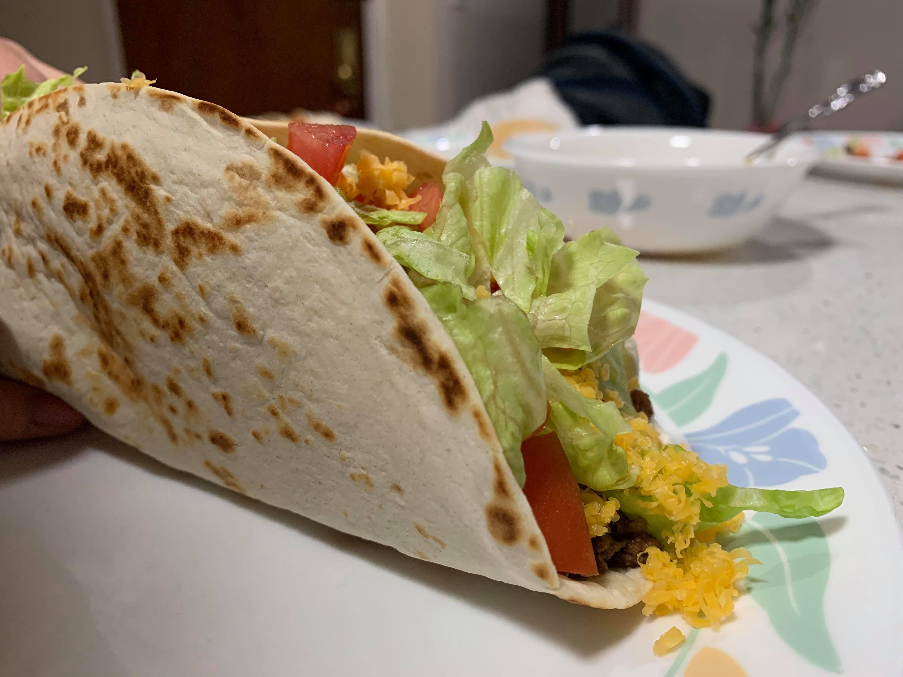

Taco (Tacobell-style)

Ingredients:
Meat:
- 1 lb Ground beef
- 1 tsp Chili powder
- 1/2 tsp Paprika
- 1/2 tsp Cumin
- Salt
- Pepper
Toppings:
- Sour cream
- Lettuce, shredded
- Tomatoes, diced
- Cheddar cheese, grated
- Optional: Salsa or Hot sauce
Other:
- Hard taco shells or Soft flour tortillas
Instructions:
- Prepare the toppings by shredding the lettuce, dicing the tomatoes, and grating the cheddar cheese.
- Over medium heat, fry the ground beef with the spices and the salt and pepper to taste.
- If using soft tortillas, toast them on the stove over medium to medium-low heat.
- Fill your tortilla or taco shell in the order of: ground beef, sour cream, lettuce, tomatoes, cheddar cheese, and optionally salsa or hot sauce.